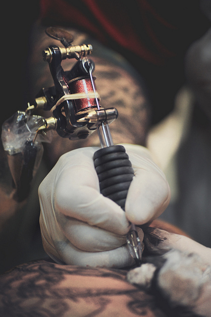

Процесс нанесения татуировки
Процесс создания татуировки начинается с выбора эскиза. Современные мастера наработали колоссальный опыт, поэтому тело можно украсить «на любой вкус»: узором, этническим символом, реалистичным портретом и др. Предлагаем несколько советов о том, как определиться с выбором рисунка, места, стиля.
- Отправляясь в тату-салон, нужно знать хотя бы примерно, чего вам хочется. Подберите несколько изображений, а потом мастер с учетом ваших пожеланий создаст эскиз. Этот процесс может длиться довольно долго.
- Изучите историю понравившегося стиля, углубитесь в символизм, если собираетесь наносить племенные знаки или сакральные узоры.
- Выберите место. Тату должна быть уместна, пропорциональна, детализирована – что хорошо для предплечья, вряд ли подойдет для спины. Проще всего набивать татуировки на икры, спину, ягодицы, грудь, плечи в связи с особенностями анатомии. На пальцах, запястьях, ребрах, лице поверхность тела неровная, что усложняет задачу для мастера и требует тщательной подгонки рисунка. Важно! Качество татуировки всегда зависит от особенностей кожи, ее оттенка, строения тела.
- Если вы хотите маленькую тату, то рисунок должен быть простым и лаконичным, ведь процесс нанесения краски на кожу отличается от рисования на бумаге.
- Выбирая мастера, отдайте предпочтение тому, кто работает в выбранной вами технике, посмотрите его портфолио, особенно недавние татуировки.
Встреча с мастером
Предварительная встреча нужна, чтобы обсудить эскиз, место и процесс создания тату. Затем вы посещаете салон, чтобы увидеть рисунок, внести коррективы, если потребуется. В конце назначается дата.
Как подготовиться?
Тщательно спланируйте день, чтобы быть в форме и иметь хорошее настроение. Накануне у вас должна быть возможность выспаться. Желательно, чтобы процессу набивания тату не предшествовали важные события. Например, можно неудачно сдать экзамен или провести переговоры, что полностью испортит настрой.
Важно! Нельзя перед процедурой принимать алкоголь как минимум за сутки и тем более «для храбрости» в тот же день. Этиловый спирт повышает давление, расширяет кровеносные сосуды, кровообращение идет интенсивнее, в связи с чем бледнеет свежий рисунок, заживлении идет труднее и дольше, а сам процесс становится более болезненным.
Девушкам не рекомендуется делать татуировку во время критических дней. В этот период обычно не очень хорошее самочувствие и настроение, а кожа в связи с физиологическими особенностями немного теряет эластичность.
Подготовка мастера
Рабочая зона готовится заново каждый раз к приходу нового клиента. Этот процесс состоит из ряда необходимых действий:
- стерилизация инструментов;
- упаковка в пленку или одноразовые пакеты предметов, не требующих стерилизации;
- подготовка всего необходимого, аккуратная выкладка (иглы, ватные тампоны или диски, машинки, емкости для краски и др.);
- носики для игл извлекаются из стерильной упаковки, устанавливаются на машинку, затем в них вставляются иглы (все это мастер делает в перчатках);
- машинки и питающие шнуры защищаются одноразовыми полиэтиленовыми чехлами;
- специальные колпачки заполняются нужными красками.
Как набивают тату: разновидности машинок
Машинки делятся на роторные и индукционные. Выделяют также контурные модели и для сплошного закрашивания. Контурные позволяют делать тонкие штрихи и растушевку, двигаются с большой скоростью (до нескольких тысяч ударов иглой в минуту). Машинки для закрашивания меньше травмируют кожу, работают с меньшей частотой, игла глубже проникает в кожу.
Как набивают татуировки: процесс нанесения
Рисунок распечатывается на принтере, затем переносится на трансферную бумагу. После этого обрезается по контуру. По краям рисунок немного надрезают, чтобы он плотно лег на тело. Кожу освобождают от волос, протирают антисептическим средством. На кожу наносят состав для переноса изображения.
Эскиз прикладывается к коже и аккуратно прижимается. Через несколько секунд рисунок снимают, а на теле остаются контуры. Дополнительно может использоваться маркер для тела. Также некоторые мастера делают эскиз полностью им, минуя этап переноса контура.
Затем наносится рисунок. Предварительно кожу можно смазать вазелином, но это не обязательно. Игла машинки обмакивается в краску, мастер начинает рисовать контуры. Лишняя краска, остающаяся в процессе, неоднократно стирается салфеткой или ватным диском. С помощью закрашивающей машинки рисунок заполняется цветом. Сначала прорисовываются черные участки, затем – цветные (в основном сначала темные, потом светлые).Важно! Этапы и особенности процесса напрямую зависят от типа и особенностей кожи клиента.
После нанесения
С кожи в последний раз удаляется лишняя краска, клиент оценивает работу, посмотрев в зеркало. Затем наносится обеззараживающее и ранозаживляющее наружное средство. Татуировка затягивается пленкой или впитывающей пеленкой. «Повязка» фиксируется пластырем.Далее клиент должен строго соблюдать рекомендации по уходу за татуировкой, потому что 80% успеха в период заживления зависит от грамотной обработки рисунка.
Услуги нашего художественного салона татуировок
В нашем салоне работают только профессиональные тату мастера, которые получили высшее художественное образование. Для них это не просто работа, а желание воплотить в жизнь все свои идеи и задумки. У нас вы можете нанести татуировки в любой технике, которую считаете более приемлемой.Конечно, в основном байкеры носят на теле не только красочные наколки, которые ярким пятном выделяются на общем фоне темной одежды, цепей и тяжелой обуви.